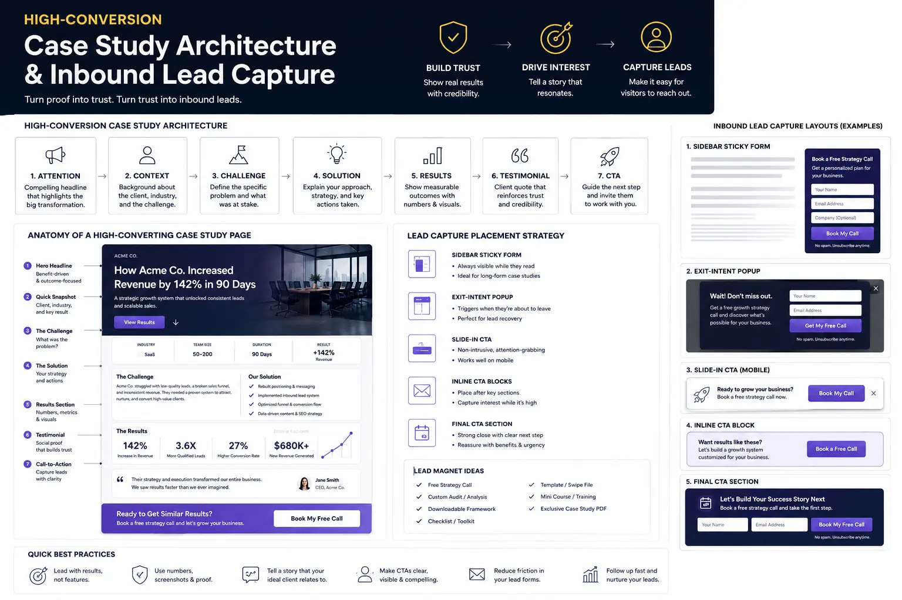
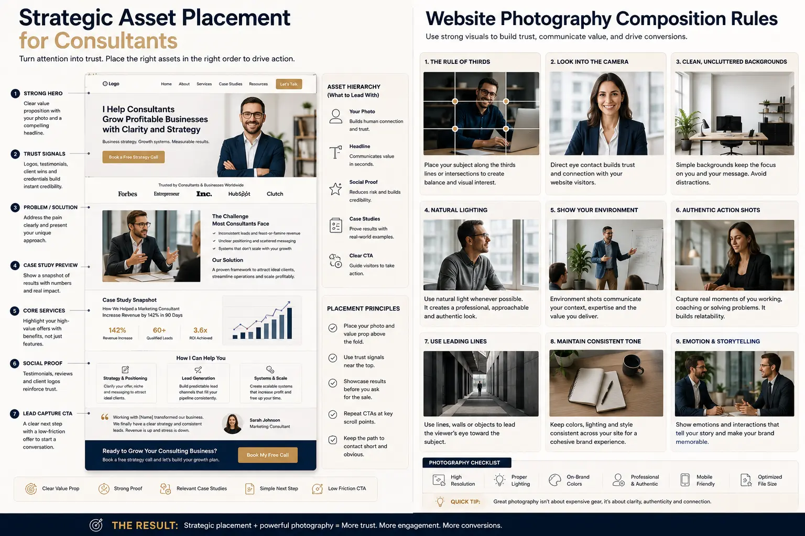

How to Design High-Converting Visual Case Studies on Your Storefront
The Evolution of Storefront Credibility: From Textual Resumes to Visual Proof Engines
For years, personal websites were treated as digital filing cabinets—static repositories of resumes, bio pages, and lists of past employers. However, in the modern professional landscape, the storefront serves a much higher purpose: it is the primary engine for business development, relationship building, and client acquisition. When it comes to Designing high-converting personal websites, the most successful consultants and executives understand that vanity metrics and generic "about me" paragraphs do not build trust. Instead, clients seek evidence-based assurance that a service provider can solve their specific operational headaches. This realization has sparked a massive shift in how professional portfolios are designed. Instead of listing achievements, modern storefronts leverage professional Website & Catalog Visual Production to present data-driven narratives. By transforming abstract qualifications into concrete visual evidence, high-converting storefronts capture the attention of high-value prospects within seconds of their arrival. A key component of this shift is moving away from low-resolution snapshots and stock imagery. Investing in professional Website & Catalog Visual Production is no longer optional; it is a critical component of establishing category authority and brand prestige. In the consulting world, where the client is buying expertise rather than a physical commodity, the visual presentation of that expertise determines its perceived value.
As visual media continues to dominate how information is consumed, the integration of video, high-fidelity graphics, and structured case studies is critical. When prospective clients land on your homepage, they should immediately perceive an environment of professional competence. In Designing high-converting personal websites, the layout must serve as an active conversion funnel. This means every asset, from client headshots to ROI charts, must be positioned strategically. Without high-end Website & Catalog Visual Production, your storefront is likely to blend into a sea of generic freelancers. Elevating your brand requires treating your portfolio not merely as a gallery, but as a systematic showcase of business problem-solving, structured with an intentional layout that guides visitors toward booking a call.
Implementing High-Conversion Case Study Architecture
The cornerstone of any high-performing personal brand storefront is its case study section. However, most case studies are structured like internal project logs, detailing the daily tasks completed rather than the strategic outcomes achieved. Implementing a robust High-Conversion Case Study Architecture is critical to changing this dynamic. This structural setup, known as High-Conversion Case Study Architecture, guides the reader through a carefully orchestrated narrative arc: from initial pain point identification to the methodology employed, and finally to the measurable business impact. The magic of High-Conversion Case Study Architecture lies in its logical flow. It begins with a metrics-driven headline that immediately calls out the primary achievement (e.g., "How We Scaled Sales by 40% in 90 Days"). From there, the narrative breaks down into three key phases. First, the "Before" state details the client's challenges, using visual tools like problem mapping or diagnostic charts. Second, the "Solution" phase outlines the consultant's proprietary framework, visualized through clean diagrams or flowcharts. Finally, the "After" phase presents the hard data—ROI metrics, before-and-after timelines, and financial impacts. By framing client successes within this structured visual narrative, the storefront stops being a passive brochure and becomes a highly persuasive sales tool. This structured storytelling is specifically designed to work in tandem with Inbound Lead Capture Layouts, ensuring that once a prospect is convinced of your capability, the path to booking a consultation is friction-free.
Building a High-Conversion Case Study Architecture requires a deep understanding of customer psychology. Prospective clients do not buy your processes; they buy the resolution to their pain. When you visually lay out the transformation, you make your expertise tangible. Using custom visual components like side-by-side comparisons, performance graphs, and client highlights reinforces the narrative. In Designing high-converting personal websites, this architecture is what separates industry authorities from general service providers. When you consistently demonstrate that your work yields measurable, visual proof of success, you create a self-sustaining client acquisition machine.
Authority Projection
A structured visual proof layout immediately establishes you as a premium authority. By showcasing metrics and frameworks clearly, you show prospects that your fees are justified by real-world business results, bypassing low-value price negotiations.
Friction Reduction
Visual case studies address prospect objections pre-emptively. By illustrating your methodology step-by-step and displaying concrete outcomes, you answer key security and capability questions before the prospect even hops on an introductory sales call.
Lead Capture Velocity
Combining structured proof with specialized lead capture mechanisms increases conversion speed. Prospects who read through an evidence-based case study convert into scheduled meetings at a much higher velocity than those viewing standard service lists.
Dwell Time and Engagement
High-fidelity visual assets, charts, and video testimonials keep visitors engaged on your site for longer. This increased dwell time not only boosts SEO indicators but also gives your storefront more opportunities to present high-converting calls-to-action.

Strategic Asset Placement: Layouts that Capture Inbound Leads
Once your case studies are structured, the next challenge is ensuring that visitors actually see and engage with them. This is where strategic asset placement for consultants becomes essential. A high-converting storefront must place proof elements—such as client logos, authority badges, and case study highlights—in the natural path of the user's eye. By leveraging strategic asset placement for consultants, we ensure that high-impact credentials are placed in the hero section or immediately below the fold, catching the user's eye before they have the chance to bounce. It is a common mistake to hide case studies deep within a sub-menu or at the very bottom of a long scroll. Instead, the principles of strategic asset placement for consultants suggest that case studies should be featured on the homepage as teasers, linking out to dedicated conversion pages. These conversion-focused pages act as Inbound Lead Capture Layouts by surrounding the visual case study with clear calls-to-action (CTAs). For example, a case study page should have a sticky contact form or a "Book a Strategy Call" button that follows the user as they scroll through the client success story. Designing seamless Inbound Lead Capture Layouts near high-impact case studies ensures that the momentum generated by reading the success story is immediately channeled into a high-value conversion. When strategic placement meets optimized layout design, storefront conversion rates can increase by up to 300%.
Maximizing your site's impact through strategic asset placement for consultants also means using secondary assets like trust badges, media mentions, and client quotes at crucial decision points. For example, placing a high-authority client logo right next to a lead form dramatically reduces form abandonment. When designing Inbound Lead Capture Layouts, the visual weight of the page should always pull the visitor's eye toward the next logical step. If your proof assets are scattered randomly, the page feels chaotic. A clean, structured placement plan aligns client satisfaction, industry authority, and direct conversion elements in a logical, visual hierarchy.
Website Photography Composition Rules: Establishing Visual Trust
While text and data form the backbone of a case study, the visual elements are what capture immediate attention. In personal branding, the consultant is the product, making high-quality photography a major trust signal. Adhering to professional website photography composition rules helps establish a sense of polish and authority. By applying website photography composition rules such as negative space, the rule of thirds, and proper lighting, you can make your storefront feel like an elite, high-value destination. One critical composition rule is "gaze direction." When selecting your headshot or action photography, ensure that your eyes are directed toward the call-to-action form or key copy on the page. The human eye naturally follows the gaze of others, and using this composition rule allows you to guide your visitors' eyes directly to your lead capture form. Furthermore, understanding website photography composition rules is essential for creating balanced layouts. For example, using ample negative space around your portrait photo keeps the page looking clean and modern, preventing visual clutter from distracting the visitor from your case studies. The implementation of standard website photography composition rules also separates high-end professional personal brands from amateur setups, reinforcing the consultant's premium pricing. This visual alignment is a key driver of storefront credibility.
In the context of Website & Catalog Visual Production, photography composition extends beyond static headshots. It includes documenting your work environment, capturing "behind-the-scenes" collaboration sessions, and visually cataloging key milestones. When these photos are composed following clean design principles, they serve as subtle yet powerful proof of your daily operations. A client seeing you actively engaged in your workspace, framed professionally with correct lighting, perceives a higher tier of professional commitment. By avoiding low-resolution mobile snaps and applying rigid website photography composition rules, you communicate that you pay attention to the details—a trait every high-paying client looks for in a premium consultant.
Elevating Storefront Conversions with Video Case Studies
While written case studies and high-quality photography are excellent, video remains the gold standard for personal brand trust. The role of corporate case study video production in building trust cannot be overstated. A video case study allows prospects to see and hear actual clients describing their experience working with you, capturing the sincerity, relief, and enthusiasm that text simply cannot convey. Leveraging high-quality corporate case study video production allows you to show, rather than tell, the value you bring to a business. To be effective, video case studies must be produced with corporate-level polish. This means using professional lighting, multiple camera angles, clear audio, and a structured interview format that mirrors your case study architecture. The video should not feel like an unscripted testimonial; instead, it should be a miniature documentary of the client's transformation. By integrating these high-quality videos into your storefront, you create powerful conversion rate optimization visuals that significantly lower objection rates. In fact, storefronts that feature professional video case studies see a dramatic increase in conversion rates, as prospects are much more likely to trust a video testimonial over written text. Investing in professional corporate case study video production converts cold traffic into highly qualified leads who feel they already know, like, and trust you before the first call.
When executing corporate case study video production, the focus must remain on the client's business journey. The narrative must highlight the initial struggles, the collaborative problem-solving process, and the ultimate ROI achieved. Incorporating B-roll footage of the client in their workspace, along with overlaying text that calls out key KPIs, creates highly engaging conversion rate optimization visuals. These visual elements break up the monotony of standard talking-head videos and keep the viewer's eyes glued to the screen. In the competitive space of online consulting, where everyone claims to be an expert, these high-production video assets act as undeniable proof of your success.
The Trust Accelerator
Through professional corporate case study video production, you capture the emotional sincerity of your clients. Hearing a client speak passionately about your services establishes a level of trust that static copy cannot replicate.
The ROI Visualizer
Integrating conversion rate optimization visuals like result dashboards, growth timelines, and before-and-after metrics charts makes the scale of your achievements immediately understandable.
The Local Search Magnet
Optimizing your storefront with search terms like portfolio visual production near me connects local businesses looking for expert brand production with your high-converting, asset-rich storefront.

Integrating Local Visual Production with Global CRO Strategies
For many consultants and service providers, creating high-quality visual assets can be a logistical challenge. Searching for professional portfolio visual production near me leads to local agencies that can capture high-end photography and video on-site. However, local production assets must be aligned with global digital conversion strategies to be truly effective. Finding the right agency for portfolio visual production near me can bridge the gap between creative execution and technical optimization. When choosing a production partner, it is vital to ensure they understand how their assets will be used as part of your digital sales funnel. The photography, video interviews, and graphic assets they produce must be designed specifically to function as conversion rate optimization visuals. For instance, the team shooting your client video must know how to frame the shots so that they can be cropped for vertical platforms or embedded seamlessly alongside text on your website. They must also know how to shoot with the correct lighting and composition so that the images fit your website's design grid. Our clients look for elite portfolio visual production near me to ensure that every visual asset produced is not just beautiful, but strategically engineered to drive user action and increase storefront sign-ups.
When local portfolio visual production near me is executed with a focus on conversion, the resulting media integrates perfectly into your conversion rate optimization visuals. Instead of static, disconnected images, you receive a library of active marketing assets. These include before-and-after sliders, custom iconographies representing your steps, and high-impact hero graphics. Designing your site with these customized elements tells prospective clients that your brand is organized, modern, and backed by a professional team. Ultimately, aligning local creative production with direct-response optimization transforms your portfolio from an expense into a revenue-generating asset.
Conclusion: Building an Inbound Lead Engine on Your Storefront
In conclusion, Designing high-converting personal websites requires a shift in mindset from simple decoration to active conversion. Your storefront is your digital handshake, and the visual case studies you host are the proof of your capability. By structuring your case studies using a clear, metrics-driven High-Conversion Case Study Architecture, you ensure that every success story is a persuasive sales pitch. Combining this structure with strategic asset placement for consultants guarantees that your highest-value credentials and client testimonials are positioned for maximum visibility. To elevate this content, implementing website photography composition rules ensures a polished, professional aesthetic, while professional corporate case study video production adds a layer of human trust and authenticity that text cannot match. Finally, partnering with local experts for portfolio visual production near me allows you to capture high-end assets that serve as powerful conversion rate optimization visuals. When these elements are integrated into optimized Inbound Lead Capture Layouts, your website stops being a passive portfolio and starts functioning as a automated inbound lead generation engine, turning casual visitors into high-paying clients.
By treating your storefront as a dynamic business tool rather than a static gallery, you build long-term brand equity. High-quality Website & Catalog Visual Production ensures that your brand image remains consistent across all digital channels, from search engines to landing pages. As online spaces become increasingly crowded, the storefronts that win are those that combine compelling narrative structures with undeniable visual evidence. Begin optimizing your storefront layout today to capture the inbound leads your business deserves.
Key Topics
Ready to Build High-Converting Visual Case Studies on Your Storefront?
At The PhD Ads in Madurai, we specialize in website visual production, case study architecture, inbound lead capture layouts, and professional photography for personal brand storefronts. Let us help you design the opening visual case studies that capture attention and turn storefront traffic into inbound clients.
Email: team@e2o.in